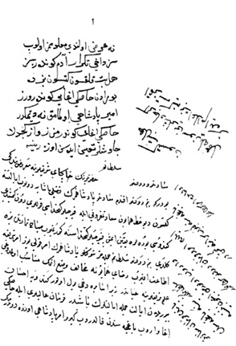

Belge 14: TKSA E.2457/23, Veziriâzam Hezârpare Ahmed Paşa’nın ‘arzı
Belge 14
“Sa’âdetlü ve devletlü sultanım hazretlerinin hâkipây-i şerîflerine ma’rûz-i bendegî budur ki:
Benim devletlü efendim sa’âdetlü pâdişahımızın Fazlı Paşa’ya dönüp eyâletine gitsün deyü hatt-i hümâyûn-i sa’âdet-makrûnu ile kapucular kethüdası kulları dün gitmişdi. Kendüsi buralara yakın imiş, kapucular kethüdasına görünmeyüb sabah namazında bize geldi, benim devletlü Sultanım cümlemüz şevketlü pâdişahımızın emir kuluyuz. Emr-i şerîfe itâ’at itmeyüb rızâ-yi hümâyûna muhâlif vaz’itmek münâsib olmadığı ‘ilm-i şerîflerine ‘ayândır, zirâ sâyire dahi yol olur kendüye ihsân buyrulan eyâlet cümle eyâletlerin başıdır; fermân-i ‘alîleri ile hâseki ağa varıb bağçesinden kaldırub girü emr-i pâdişahî üzere döndürmek bâbında fermân sa’âdetlü sultanımındır, yine bağçesinde varub oturmak içün tenbîh eyledim.
Emr ü fermân devletlü sultanımındır, bağçesine gitmeyüb sarayına gitmişdir, ol-bâbda emr sultanımındır.”
H. H.:
“Helbet gitsün, eğer çavuşların sözü ile ‘amel etmez ise gine bize i’lâm idesiz.”
Yorum:
Fazlı Paşa veziriâzamlıkta rakip görüldüğü için ihtiyar veziriâzam Sofu Mehmed Paşa onu, İstanbul’dan uzaklaştırmak için Temeşvar eyâletine tayin ettirdi (1649).39Fakat, Fazlı Paşa İstanbul’u terk etmedi. Kösem Sultan, yukarıdaki belgenin tanıklık ettiği üzere bu meselede veziriâzamı destekliyor ve bir an önce İstanbul’u terk etmesini istiyor. Fazlı Paşa, dâmâd-ı pâdişahî idi. Onun tekrar itibar kazandığını göreceğiz.
Arzın üzerindeki emirde, elbette tabirini Kösem Sultan, helbette diyerek yanlış kullanmaktadır. Belgelerin Kösem’e ait olduğunu bundan tespit etmekteyiz.
39 Nâimâ, III, s. 376.